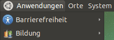

MATE Grundlagen
Dieser Artikel wurde für die folgenden Ubuntu-Versionen getestet:
Ubuntu 16.04 Xenial Xerus
Ubuntu 14.04 Trusty Tahr
Im Folgenden werden einige Dinge speziell für Nutzer der grafischen Oberfläche MATE erläutert. Während Kenner von GNOME 2 sich ohne Probleme zurecht finden werden, ist dieser Artikel einer jüngeren Generation gewidmet, die die Zeiten nicht miterlebt hat, als dieses noch den Standard-Desktop von Ubuntu bereitstellte.
Die Menüs¶
 In der oberen linken Ecke des Bildschirms findet man drei Menüs.
Im Menü "Anwendungen" findet man die auf dem System installierten Programme mit grafischer Oberfläche nach Kategorien sortiert. Mehr Informationen zum Anpassen des Anwendungsmenüs findet man im Artikel MATE Menü.
Im Menü "Orte" bekommt man Zugriff auf Verzeichnisse, CD-Laufwerke, das Netzwerk, die Suchfunktion und die zuletzt geöffneten Dokumente. Auch Lesezeichen des Dateimanagers Caja werden hier aufgelistet.
Im Menü "System" gibt es die "Einstellungen", die nur den Benutzer persönlich betreffen. Die Konfigurationsmöglichkeiten unter "Administration" beziehen sich dagegen auf das gesamte System und betreffen alle Benutzer. Deshalb muss man zum Zugriff auf diese Einstellungen auch das Passwort eingeben und Administrator des Systems sein. Zusätzlich bietet ein Kontrollzentrum (Steuerzentrale) die Möglichkeit, auf alle Einstellungen zuzugreifen - ohne die Differenzierung in Benutzer- und Systemeinstellungen. Ist eine Einstellung nur mit Root-Rechten möglich, erfolgt eine automatische Kennwortabfrage.
Das Benachrichtigungsfeld¶
Manche Anwendungen, wie zum Beispiel die automatischen Aktualisierungen ("Updates"), nutzen das MATE-Applet "Benachrichtigungsfeld" links neben der Uhr/Datumsanzeige, um den Benutzer auf Aktionen hinzuweisen. So sieht man schnell, ob beispielsweise wichtige Sicherheitsupdates verfügbar sind.
Aber auch Anwendungen, die oft im Hintergrund laufen (z.B. Instant Messenger wie Pidgin) und nicht in der Fensterliste erscheinen sollen, weil sie dort stören würden, nutzen diesen Bereich. Bei anderen Betriebssystemen nutzt man für diese Funktion die Bezeichnungen "Systray" oder "Tray Area".
Mehr Informationen zum Thema findet man unter GNOME Panel.
Virtuelle Desktops¶
In der unteren rechten Ecke sieht man neben dem Papierkorb vier graue Kästchen. Diese Kästen stellen vier virtuelle Bildschirme dar. Wie, es gibt doch nur einen Bildschirm? Ja eben, aber das ist manchmal wirklich zu wenig, wenn man viele Programme gleichzeitig benutzt, oder?
Um die Übersicht etwas zu erleichtern, kann man die vielen Programme auf vier (oder je nach Einstellung auch mehr oder weniger) virtuelle Desktops verteilen. Zwischen den Desktops schaltet man mit der Maus um, indem man auf eines der Kästchen klickt. Oder man wählt einfach per Mausrad  einen anderen virtuellen Desktop aus. Der Mauszeiger muss sich dazu über den Kästchen befinden. Mit der Tastatur kann man ebenfalls zwischen den Desktops umschalten:
Strg +
Alt +
→ oder
Strg +
Alt +
← .
einen anderen virtuellen Desktop aus. Der Mauszeiger muss sich dazu über den Kästchen befinden. Mit der Tastatur kann man ebenfalls zwischen den Desktops umschalten:
Strg +
Alt +
→ oder
Strg +
Alt +
← .
Wenn ein Programm geöffnet ist, erscheint ein Kästchen mit dem passenden Symbol auf dem Minidesktop. Man kann Programmfenster auch einfach mit der Maus zwischen virtuellen Desktops hin- und herschieben.
Desktop anzeigen¶
In der linken unteren Ecke befindet sich die Schaltfläche zum Anzeigen des Desktops. Hat man innerhalb eines virtuellen Desktops immer noch zuviele Fenster, die die Übersicht erschweren, können diese mit einem Linksklick  alle auf einmal minimiert werden.
alle auf einmal minimiert werden.
Zwischen der linken und der rechten unteren Ecke befindet sich die "Fensterliste", eine Anzeige der gestarteten Programme.
Der Dateimanager¶
Der Dateimanager Caja ist eine Abspaltung (Fork) einer älteren Version von Nautilus und integraler Bestandteil des MATE-Desktops. Da er immer im Hintergrund läuft, kann er auf dem Desktop Laufwerke, den Inhalt des Ordners ~/Schreibtisch/ und benutzerdefinierte Symbole anzeigen (siehe auch MATE Desktop anpassen und Desktop-Symbole).
Als Einzelprogramm gestartet sieht Caja dem Explorer von Windows sehr ähnlich. Links sieht man entweder Dateiinformationen, Notizen oder einen Ordnerbaum. Die Ansichtsart kann man links oben wählen. Statt der üblichen Adressleiste hat Caja eine Pfadleiste: es wird für jeden "Eltern-Ordner" ein Knopf angezeigt. Mit der Tastenkombination Strg + L schaltet man um zur Adressleiste (das funktioniert auch in Öffnen- und Speichern-Dialogen).
Die Adressleiste ist besser, wenn man einen Pfad markieren, kopieren oder einfügen möchte oder wenn man den Pfad selber schreiben will.
Die Pfadleiste ist besser, wenn man schnell einen der Eltern-Ordner öffnen möchte, da man ihn sofort anklicken kann. Die Ordner-Schaltflächen unterstützen auch "Drag&Drop", um eine Datei oder einen Ordner in eine höhere Ebene zu verschieben.
Fenster einfach verschieben¶
Fenster lassen sich leicht verschieben, wenn man die Taste
Alt gedrückt hält. Dann kann man mit der linken Maustaste zum Verschieben an eine beliebige Stelle des Fensters klicken und diese gedrückt halten. Wenn man zusätzlich noch die
⇧ -Taste drückt, rastet das Fenster an geeigneten Kanten ein. Zur Größenänderung benutzt man ebenfalls die
Alt -Taste in Kombination mit der mittleren Maustaste .
So kann man Fenster einfach verschieben bzw. in ihrer Größe ändern, ohne mit der Maus auf die Titelleiste oder eine Bildschirmecke zielen zu müssen. Unter "System -> Einstellungen -> Fenster" kann man diverse Einstellungen zum Verschieben von Fenstern vornehmen. So lässt sich z.B. die Taste bestimmen, mit der der "Verschiebemodus" aktiviert wird.
Apropos Fenster: die Schaltflächen zum Minimieren, Maximieren und Schließen eines Fenster sind exakt da, wo man sie als Windows-Umsteiger erwartet: rechts oben.
Text schnell kopieren¶
Unter Linux gibt es nicht nur eine Zwischenablage, in die man Text mittels Strg + C kopieren und mittels Strg + V wieder einfügen kann. Hat man mit der Maus den Text markiert, so kann man ihn mit einem Klick auf die mittleren Maustaste, dem Mausrad oder durch gleichzeitiges Drücken beider Maustasten an anderer Stelle einfügen.
 Übersichtsartikel
Übersichtsartikel- Erstellt mit Inyoka
-
 2004 – 2017 ubuntuusers.de • Einige Rechte vorbehalten
2004 – 2017 ubuntuusers.de • Einige Rechte vorbehalten
Lizenz • Kontakt • Datenschutz • Impressum • Serverstatus -
Serverhousing gespendet von